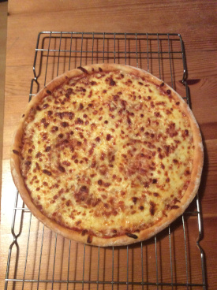

Pizza
Makes 2 delicious pizzas, just like this one

Ingredients
Dough
- 350g bread flour
- 4g yeast
- 4g salt
- 235g water
Sauce
- 1 400g can plum tomatoes
- 1-2 cloves garlic
- 1 tbsp olive oil
- Salt, to taste
Toppings
- 300-400g mozzarella cheese
- Toppings of your choice
Method
- make the dough by mixing the flour, water, yeast & salt together. Knead for approximately 10 minutes until the dough is firm and supple.
- Divide the dough into two balls, cover and prove for 45-60 mins, or until doubled in size.
- Form each piece of dough into two circles. Use your hands to shape the dough on a floured surface.
- Blend the tomatoes, garlic, olive oil and salt to make the sauce. Blend for a shorter period for chunkier sauce, or a longer period for smoother sauce
- Cover your rolled out dough with sauce, top with cheese and any other toppings you want.
- Bake in a preheated oven at maximum temperature. The tme it takes varies according to your oven and the toppings you have, so keep an eye on it, and remove from the oven when it looks ready.
You should have an amazing pizza that tastes great. And this recipe makes two of them. One for you, and One for a friend.
Or one for now, one for later (Leftover pizza tastes delicious) Or two for now if you're feeling very hungry.
Enjoy! :)
Back to the Recipe Repository